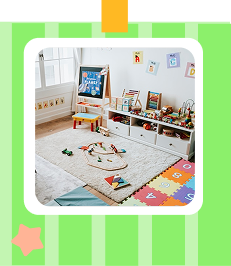
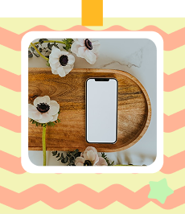

当院のご紹介
みどりの森⽿⿐咽喉科では、年齢に関係なく、すべての皆様に寄り添い、安心していただける医院を目指しています。
診察はもちろんのこと、通いやすさや院内の居心地の良さにも力を入れています。

キッズスペース完備
診察の待ち時間は大人でも退屈なもの。
当院では、広めのキッズスペースをご用意しておりますので、待ち時間も楽しく過ごすことができます。

待ち時間を最小に
事前のWeb予約やスタッフ間のスムーズな情報共有で患者様の待ち時間を可能な限り少なくできるよう努めています。
※操作方法等不安な方は従来通りお電話でのご予約も承ります。
通いやすさ
ひなた駅から徒歩5分の立地。
敷地内に駐車場も併設しており、どなた様でも通院に便利です。